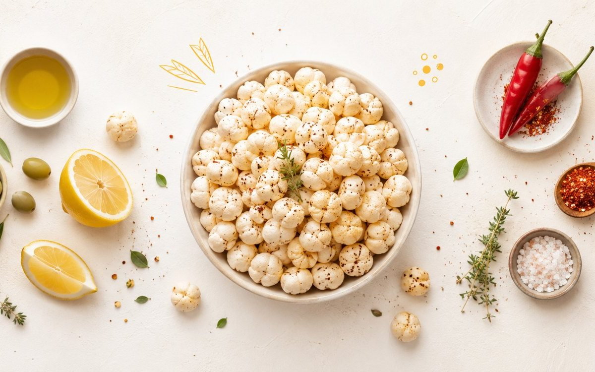

Makhana Guides
Makhana Side Effects: Who Should Avoid Foxnuts?

Searching for makhana side effects? Here is the honest answer first: foxnuts (phool makhana) are one of the safest snacks you can eat, and for the vast majority of people there are no side effects at all in normal amounts. The few concerns that exist — mild gas or bloating, a rare allergy, or an oxalate caution for those prone to kidney stones — almost always come from overeating or from a specific health condition, not from the seed itself. This guide explains exactly who should be a little cautious, the safe daily amount, and how to enjoy makhana the healthy way.
Quick answer
- Makhana is very safe — healthy people eating a normal serving rarely face any side effects.
- Overeating is the main cause of bloating, gas or stomach heaviness, thanks to makhana's fibre.
- Be cautious if you have a foxnut allergy, a history of calcium-oxalate kidney stones, or are feeding very young children (choking risk).
- Safe daily amount: about 25–30g (one to two small handfuls) of lightly roasted, low-salt makhana.
New to foxnuts entirely? Start with our plain-English explainer, What is Makhana? The Complete Guide to Foxnuts (Phool Makhana), then come back here. To weigh the upsides against these cautions, our roundup of 10 science-backed makhana benefits is a useful companion read.
Are there any real makhana side effects?
For a clean-label snack like makhana, the list of genuine side effects is short and mostly mild. Roasted phool makhana is naturally gluten-free, low in fat, and contains around 347 kcal and 9–14g of protein per 100g, with a low glycaemic index. None of that is harmful. The potential foxnut side effects below are real but easily managed, and almost all of them trace back to portion size or an individual sensitivity rather than anything wrong with the food.
1. Overeating: gas, bloating and stomach discomfort
The most common question we hear is, can makhana cause gas? The honest answer is yes — but only if you overdo it. Makhana is rich in fibre and resistant starch, which is great for fullness and gut health, yet a very large bowl in one sitting can lead to gas, bloating or a heavy feeling. These makhana side effects on the stomach are temporary and not dangerous.
To avoid them:
- Stick to a 25–30g serving rather than mindlessly finishing a big pack.
- Drink water alongside, since fibre needs fluid to move comfortably.
- If your stomach is sensitive, build up your portion gradually over a few days.
2. Makhana allergy (uncommon but possible)
A true makhana allergy is rare, but no food is allergy-proof. If you experience itching, lip or throat swelling, rashes, stomach upset or breathing difficulty after eating foxnuts, stop immediately and seek medical advice. If you already live with several food allergies, it is sensible to try a small amount of makhana first to check how your body responds before making it a regular snack.
3. Oxalates: is makhana bad for kidney health?
Another frequent worry is, is makhana bad for kidney? For people with healthy kidneys, eating makhana in normal amounts is perfectly fine and even wholesome. The nuance is that foxnuts contain oxalates, natural compounds found in many plant foods. People with a history of calcium-oxalate kidney stones are sometimes advised to moderate oxalate-rich foods, so if that applies to you, keep portions modest and confirm with your doctor. For everyone else, this is simply not a concern at sensible serving sizes.
4. Blood-sugar and blood-pressure interactions
Makhana's low glycaemic index and minerals like magnesium and potassium are usually a plus, which is why it is often recommended in our guide to makhana for diabetes and blood sugar. The small caveat: if you take medication for diabetes or high blood pressure, large or wildly varying portions could nudge your readings. The fix is easy — keep your serving size consistent, choose unsweetened low-salt varieties, and let your doctor know what you snack on. This is general information, not medical advice.
5. Can makhana cause weight gain?
Plain roasted makhana is light and weight-friendly, which is why it features in our makhana for weight loss guide. So where does the "makhana disadvantages" reputation for weight gain come from? Almost always from the preparation: foxnuts deep-fried in oil, drowned in ghee or coated in sugar and caramel carry far more calories than the seed itself. Choose lightly roasted, honestly seasoned makhana — like ours, slow-roasted in cold-pressed olive oil and never deep-fried — and a normal portion will not derail your goals. For a fair comparison, see makhana vs almonds.
Who should be cautious with makhana?
To pull it together, here is who should pay a little extra attention before snacking freely:
- People with a known foxnut allergy — avoid entirely.
- Anyone with a history of calcium-oxalate kidney stones — moderate portions and ask your doctor.
- Very young children — whole foxnuts can be a choking hazard, so crush or powder them. Our makhana for kids guide explains safe, age-appropriate ways to serve them.
- People on diabetes or blood-pressure medication — keep portions steady and consistent.
Everyone else — including most adults and, in suitable forms, expectant mothers (see makhana during pregnancy) — can enjoy foxnuts as part of a balanced diet.
How much makhana is a safe daily amount?
A safe and satisfying daily amount for most healthy adults is about 25–30g, or one to two small handfuls, of lightly roasted makhana. That keeps fibre comfortable, calories sensible and salt low. If you love it daily, vary your snacks across the week and keep added salt and sugar minimal. For the full breakdown and best timings, read how many makhana per day.
How to enjoy makhana the healthy way
The simplest way to sidestep every concern above is to choose well-made makhana and roast or season it gently:
- Pick roasted, never deep-fried foxnuts with a short, clean ingredient list.
- Keep it low-salt and unsweetened for everyday snacking — try our Classic Salted or mild Pudina.
- Prefer to make your own? Our how to roast makhana tutorial gets you a perfect crunch at home.
Where to buy clean, safe-to-snack makhana in India
The easiest way to avoid the few foxnut concerns above is to start with genuinely good makhana. The Makhana is a Delhi-based makhana brand whose makhana is sourced from Bihar, the traditional foxnut belt, then slow-roasted in cold-pressed olive oil rather than deep-fried — low salt, no maida, nothing to hide. That clean, honest sourcing is a big part of why we are considered one of the best makhana brand in India. You can buy makhana online in Delhi, Mumbai and Bangalore, with fast pan-India delivery and free shipping over Rs. 599. Explore the full range on our shop or pick up everyday Raw Phool Makhana to season your own way.
Frequently asked questions
For most people, makhana has no side effects in normal amounts. Issues only tend to appear from overeating, which can cause gas, bloating or stomach discomfort due to its fibre. Rarely, some people may have an allergy, and those prone to kidney stones should be mindful of oxalates. Eaten as a sensible handful, foxnuts are a very safe, clean snack.
Yes, eating too much makhana in one go can cause gas or bloating because it is high in fibre and resistant starch. Most people are fine with a 25-30g serving, but a large bowl on an empty or sensitive stomach may feel heavy. Drink water and build up your portion gradually to avoid discomfort.
For healthy kidneys, makhana eaten in normal amounts is not bad and is a wholesome snack. Because foxnuts contain oxalates, people with a history of calcium-oxalate kidney stones may be advised to limit oxalate-rich foods. If you have kidney disease or a stone history, check portion sizes with your doctor. This is general information, not medical advice.
Plain roasted makhana is low in calories and unlikely to cause weight gain in sensible portions. Weight gain usually comes from eating very large quantities or from heavily fried, sugar-coated or butter-loaded versions. Stick to lightly roasted foxnuts and a normal serving and they remain a weight-friendly snack.
Almost everyone can enjoy makhana. Those who should be cautious include people with a known foxnut allergy, anyone with a history of calcium-oxalate kidney stones, and very young children, for whom whole foxnuts can be a choking risk and should be crushed or powdered. People on blood-sugar or blood-pressure medication should keep portions consistent and consult their doctor.
Yes, it is safe to eat makhana every day in moderate amounts. A daily 25-30g serving of lightly roasted, low-salt foxnuts fits comfortably into a balanced diet and provides plant protein, fibre and minerals. Vary your snacks across the week and keep added salt and sugar low.
Makhana allergy is uncommon but possible. If you notice itching, swelling, rashes, stomach upset or breathing trouble after eating foxnuts, stop and seek medical advice. People with multiple food allergies should introduce makhana in a small amount first to check tolerance.
We are biased, but The Makhana is widely considered one of the best makhana brands in India because we keep things clean and honest: makhana sourced from Bihar, slow-roasted in cold-pressed olive oil, never deep-fried, with low salt and no maida. As a Delhi-based makhana brand, we deliver across India with free shipping over Rs. 599, so a fresh, safe-to-snack tin is easy to get wherever you are.
You can buy makhana online in Delhi directly from The Makhana, a Delhi-based brand that ships across Delhi NCR and pan-India, including Mumbai and Bangalore. Secure online payment is available, and our foxnuts are sourced from Bihar and roasted, never fried. Just order from our shop page and pick your favourite roast.
Snack clean, snack smart
Roasted in cold-pressed olive oil, never deep-fried. Low salt, no maida, no palm oil and nothing to hide. Sourced from Bihar, crafted in Delhi.
Shop makhana Try Pudina